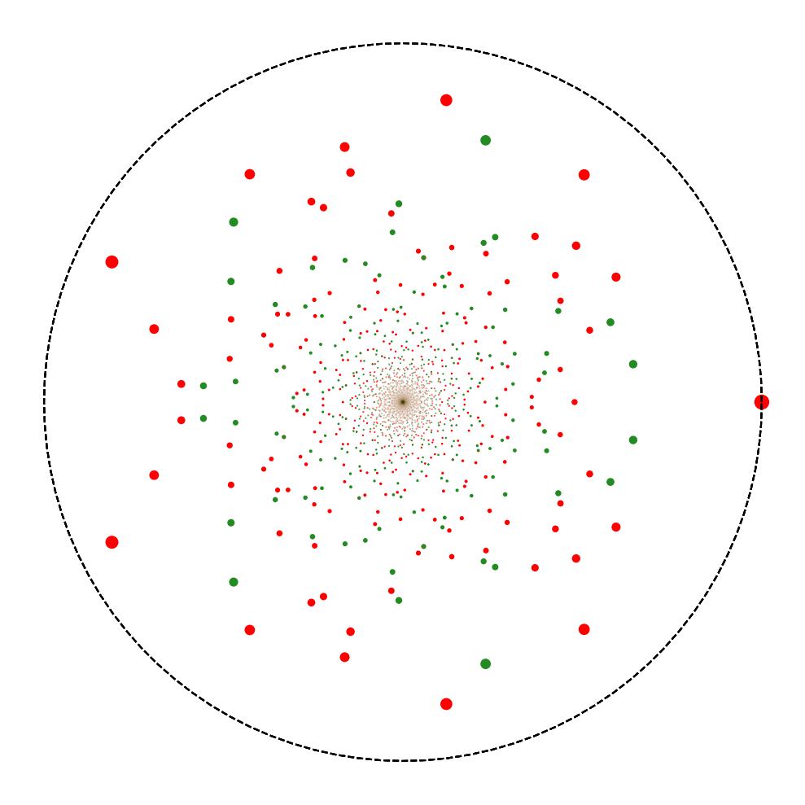

I am a Research Fellow at the Mathematics Institute of the University of Warwick.
You can contact me at firstname.lastname@warwick.ac.uk
My departmental address is:
Mathematics Institute
Zeeman Building
University of Warwick
Coventry CV4 7AL
Research interests
My research is in chaotic dynamical systems and understanding their long-term behaviour using functional analytical techniques. I am interested in the interplay between Ergodic Theory and Spectral Theory, in particular in Ruelle resonances of hyperbolic dynamical systems. I also have a strong interest in applications, developing algorithms to approximate dynamical quantities of interest such as invariant measures, mixing rates, Lyapunov exponents, dimensions of hyperbolic attractors.
Professional history
In 2014, I received my PhD from Queen Mary University of London under the joint supervision of Wolfram Just and Oscar F. Bandtlow (see my thesis).
From 2014 to 2018 I worked as a Research Engineer at London-based sports data analytics start-up Stratagem, developing machine learning based trading strategies for sports markets.
From 2018 to 2021 I was a PostDoctoral Research Assistant at the School of Mathematical Sciences, Queen Mary University of London.
In 2021, I joined the Mathematics Institute of the University of Warwick as a Research Fellow.